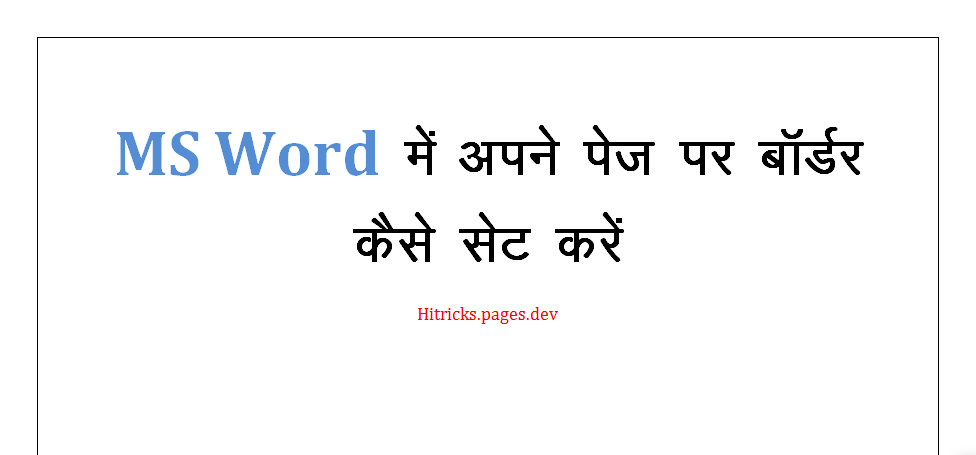
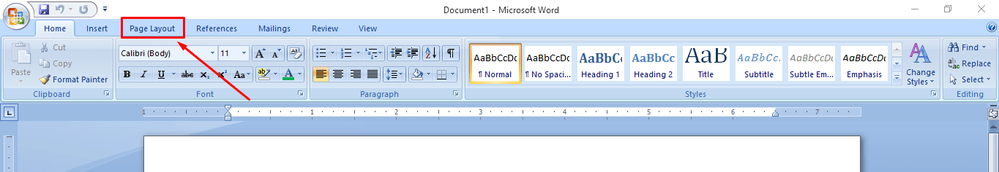
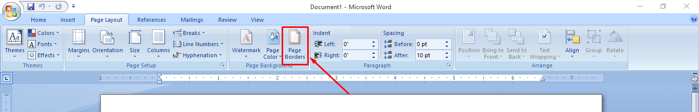
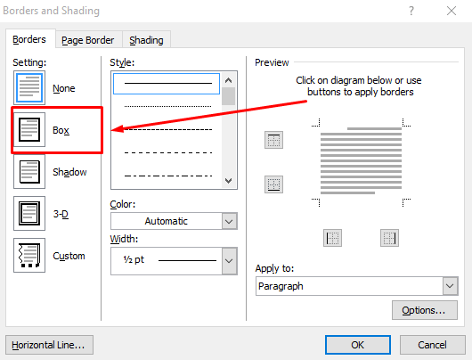
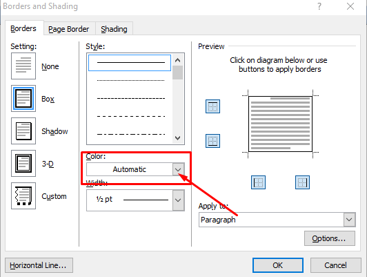
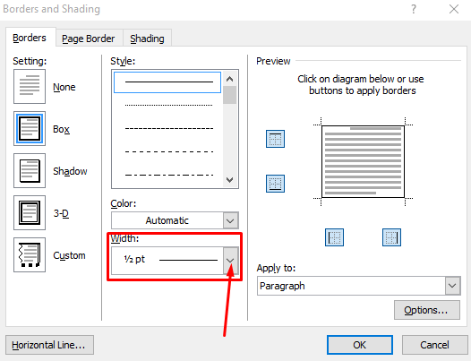
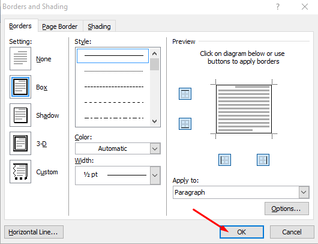

MS Word में अपने पेज पर बॉर्डर कैसे सेट करें
दोस्तों यदि आप MS Word के नय यूज़र हैं और आप अपने word document के पेज में Border लगाना चाहते है तो आप बिलकुल सही लेख में आये है इस लेख में हम यह पढ़ने वाले है की MS word के पेज में बॉर्डर कैसे सेट करे।
अपने MS Word के पेज पर बॉर्डर कैसे सेट करें
अपने MS Word के पेज पर बॉर्डर सेट करने के लिए आपको सबसे पहले अपना word document खोलना होगा। फिर आपको निचे बताये गए तरीके से काम करना है -
- सबसे पहले अपने MS Word के पेज पर बॉर्डर लगाने के लिए आपको अपने word document के उप्पर दिए गए Page Layout बटन पर क्लिक करे। 
- Page Layout बटन पर क्लिक करने के बाद आपको बहुत से options दिखने लगेंगे। आपको इनमे से Page Border बटन पर क्लिक कर देना है। 
- अब आपके सामने एक box open हो जायेगा आपको इस box में दिए गए Box बटन पर क्लिक करनी है। इस पर क्लिक करने से चारो ओर का बॉर्डर automatic सेट हो जायेगा। 
- अब आप चाहे तो बॉर्डर का कलर, कलर के बटन को दबा कर chage कर सकते है। 
- अगर आपको बॉर्डर की मोटाई बढ़ानी है तो Width के अंदर दिए है बॉक्स पर क्लिक कर बॉर्डर की मोटाई भी सेट कर सकते है। 
- बॉर्डर को अपने हिसाब से सेट करने के बाद आपको ok बटन पर क्लिक कर देना है। अब आपके पेज में बॉर्डर आ जायेगा। 